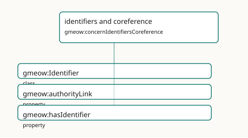

identifiers and coreference
- IRI: https://blackcatinformatics.ca/gmeow/concernIdentifiersCoreference
- CURIE:
gmeow:concernIdentifiersCoreference
External authority links, identifier records, and reference-only bridging.

Participating Slices
- coreference - GMEOW Coreference Module
- organization - GMEOW
OrganizationModule
Terms
| Term | Category | Definition |
|---|---|---|
gmeow:Identifier |
class | A reified external-identifier record bundling a scheme-local value with its scheme, and optionally the authority URL that resolves it and a human-readable name — an ORCID, a geni p |
gmeow:authorityLink |
property | Links a GMEOW entity to a record in an external authority, registry, database, gazetteer, or catalogue by IRI. It is a see-also authority pointer, not an OWL identity merge; assert |
gmeow:hasIdentifier |
property | Relates an entity to a reified external-identifier record (an ORCID, geni id, nip05, LEI, industry code, …). Domain is gmeow:Entity: persons, organizations, works and places all ca |